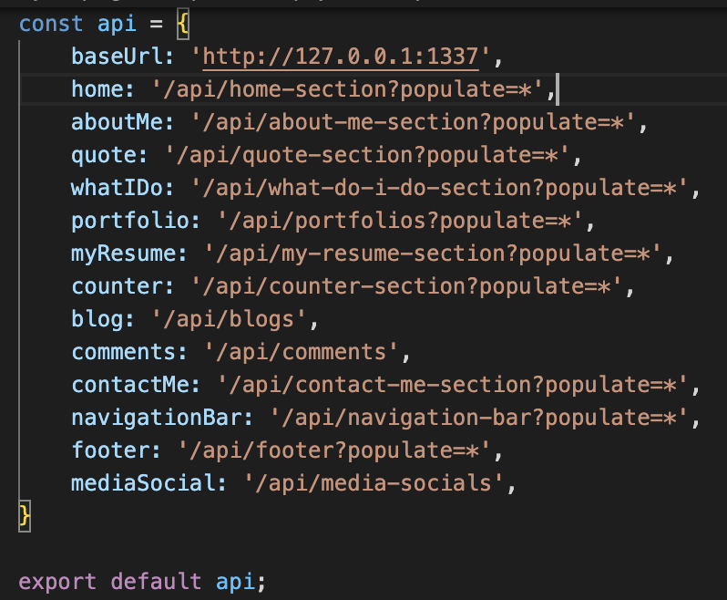

Sync The root api frontend to your strapi CMS here
Root folder src/core/api.js

this version uses Strapi CMS API to provide response for the front end side. if you're not familiar
with Strapi please check out their documentation.
note that we are currently using the latest strapi. so please refer to the Strapi documentation
to use the CMS please refer to the step above on how to get the Strapi CMS working in you local environment.
on this version the Register, Login and Profile page is working by using Strapi built in
function.
Register, Login and Profile is used to Register a new user for the CMS, this new user will have a
default Author collection created upon registering.
once you register for a user, you can use it to Login into the CMS from the front end login page. or you can
use this existing credential to Login
Email : strapi.admin@mail.com
Password : NewSuperAdminPassword1
after a successful Login then you can access the
Profile page, this page is used to update the User
Profile Info.
you can upload a profile picture and a banner for the user and update the user information